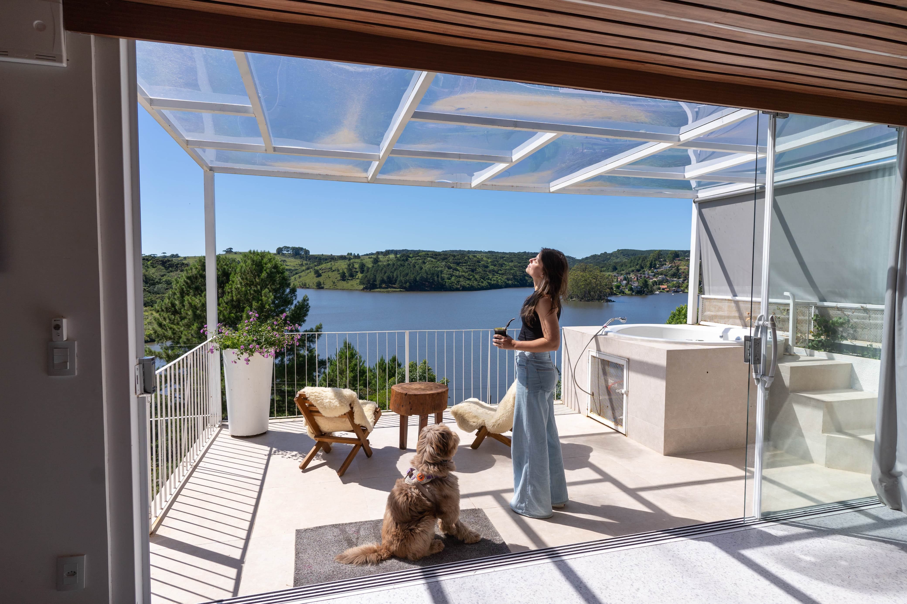
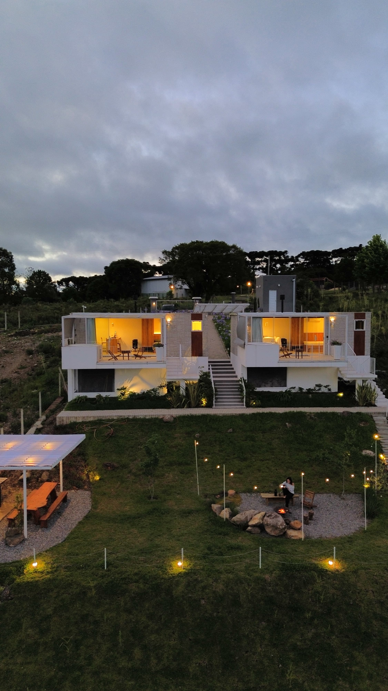
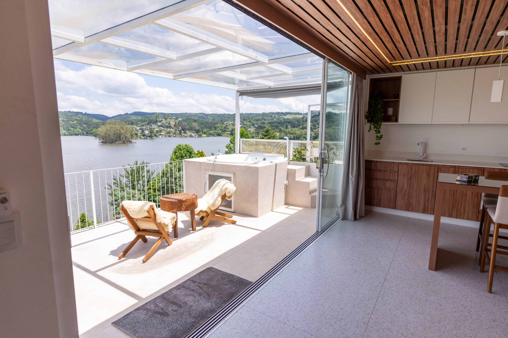

Studio Vista 1
Ideal para uma escapada a dois ou dias de descanso na Serra Gaúcha.
- Vista e natureza
- Ambiente aconchegante
- Reserva via Airbnb
Airbnb • Serra Gaúcha
Studios pensados para desacelerar, curtir a vista e compartilhar momentos especiais com quem você ama.

Vista, natureza e conforto
O Vista Temporada conecta hóspedes a uma experiência acolhedora em São Francisco de Paula e região: dias tranquilos, clima de serra, cantinhos charmosos e praticidade para reservar.
Hospedagens

Ideal para uma escapada a dois ou dias de descanso na Serra Gaúcha.

Conforto, charme e praticidade para aproveitar São Francisco de Paula.
Experiência
Friozinho, natureza e aquele ritmo perfeito para descansar.
Espaços pensados para uma estadia prática, bonita e acolhedora.
Cenários para fotos, celebrações e pequenos rituais de viagem.
Localização
Um destino para quem busca natureza, charme e tranquilidade perto dos principais atrativos da região.
Reservas
Fale com o Vista Temporada ou acesse o link de reserva para consultar datas disponíveis.